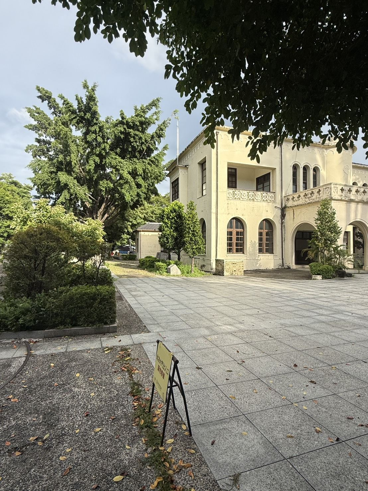

誕生電波帝國與現代化的開端
放送局選址新高町（今北區電台街 1 號），鄰近水源地，背後有三個理由：
- 消除中部電波死角中部盆地地形屏蔽、訊號不彰，放送局串起全島電波網，也是總督府對中部發布政令與時局新聞的樞紐。
- 氣象觀測與防災第一時間播報颱風、地震與氣象測報，替農業防範水患與風災。
- 讓生活有了「時間」定時報時、廣播體操（ラジオ体操）與生活常識，把工業社會的作息帶進台灣人的日常。

03 · 場館歷史
Since 1935 · JFCK
它是中部第一個把聲音送進千家萬戶的地方。一棟建築，記錄了殖民現代化、戰後媒體、戒嚴與解嚴，以及一整代人的青春耳機。
獨一無二
呼號 JFCK，中部近代廣播發祥地。
繼台北 JFAK、台南 JFBK 之後，串起縱貫全島的電波網。
圓拱窗、平拱窗、百葉通風窗，兼顧採光、通風與消音。
整條電台街只有這一個門牌，全台唯一的路名。
年表
故事
放送局選址新高町（今北區電台街 1 號），鄰近水源地，背後有三個理由：
由台灣總督府營繕課規劃。不同於總督府、臺中州廳的繁複厚重，放送局線條俐落，融入仿羅馬式半圓拱門、哥德式連續尖拱窗，以及二樓陽台洗石子拼出的菱格紋飾，帶著純樸典雅的裝飾藝術（Art Deco）韻味。
台中放送局，是台中人耳朵醒來的起點。
水源地的綠意城堡對台中一中、新民高中、台體大的學生來說，這座淡黃色洋樓是放學散步、社團排練、約會的寧靜綠洲。
聲音穿透時空從日治電波的沙沙聲、戰後農業播音、戒嚴時期的廣播劇，到民營電台的黃金年代，這裡是台中廣播文化的根。
從政令廣播到心靈安放走過戰爭宣傳與威權管控，今天它提醒我們：聲音與音樂能跨越政治更迭、療癒創傷、串聯人心。